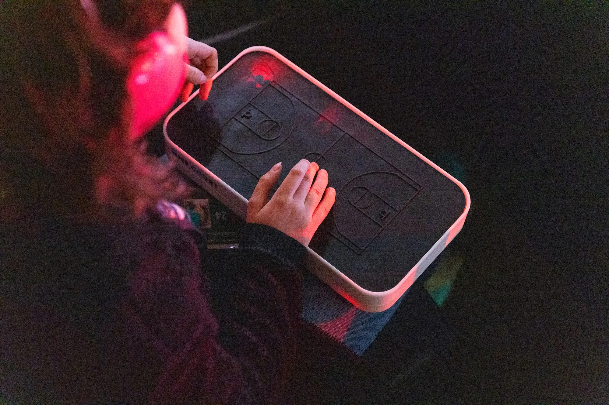
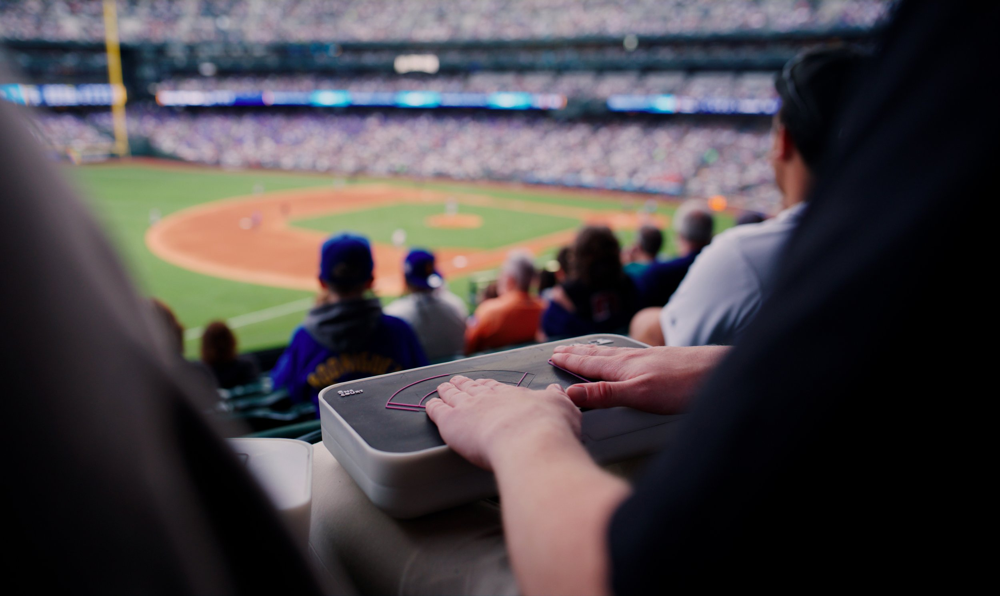
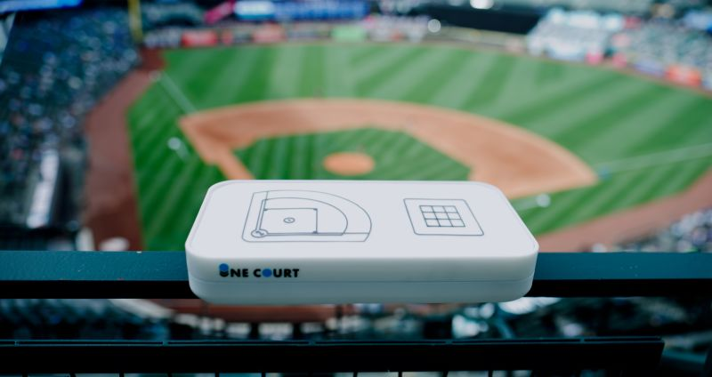

One Court: Siente el Juego, Una Revolución en Accesibilidad Deportiva.
Con One Court rompe barreras en el deporte, ofreciendo a los aficionados con discapacidades visuales una nueva forma de seguir la acción en tiempo real. A través de vibraciones táctiles, cada jugada se siente al instante, haciendo que el deporte sea accesible para todos.
Accesibilidad sin límites
One Court está revolucionando la accesibilidad en el ámbito deportivo al eliminar las barreras que enfrentan las personas con discapacidades visuales. Este innovador dispositivo permite a los aficionados seguir la acción en tiempo real mediante vibraciones táctiles, lo que les permite experimentar la emoción del juego de una manera única y sensorial. Cada jugada se traduce instantáneamente en patrones de vibración, creando una conexión palpable con el deporte. Además, esta tecnología no solo amplía la participación de las personas con discapacidades, sino que también fomenta un sentido de comunidad y pertenencia, permitiendo que todos disfruten del deporte juntos. OneCourt se convierte así en una herramienta esencial para hacer que los eventos deportivos sean accesibles y emocionantes para todos, demostrando que la inclusión y la tecnología pueden trabajar de la mano para enriquecer la experiencia deportiva.
Innovación al alcance de tus dedos
Mediante One Court revoluciona la forma en que los aficionados experimentan los deportes al incorporar tecnología háptica de última generación. Esta avanzada tecnología permite a los usuarios seguir cada instante del partido a través de vibraciones táctiles, creando una conexión íntima con la acción en el campo. Su diseño portátil lo hace ideal para ser utilizado tanto en estadios como en casa, garantizando que la emoción del juego esté al alcance de todos. Con OneCourt, cada vibración se convierte en una oportunidad para experimentar la inclusión y la adrenalina del deporte de una manera completamente nueva.
Conecta con el deporte como nunca antes
OneCourt transforma la manera de vivir el deporte, creando una experiencia sensorial en tiempo real. A través de una superficie táctil ultrasensible, el dispositivo traduce cada movimiento y jugada en vibraciones que el usuario percibe directamente con sus dedos. Esta tecnología de última generación permite sentir el ritmo del juego, desde cada pase hasta los momentos de alta tensión, capturando la esencia del deporte sin necesidad de pantallas. El dispositivo ofrece una conexión íntima y emocionante con el juego, ideal para aficionados que desean vivir el deporte de una forma completamente nueva.
Gracias a OneCourt, el deporte se convierte en una experiencia sensorial. Con una superficie táctil sensible que traduce el juego en tiempo real, permite a los aficionados sentir la emoción de cada jugada.
Relación con la IPO
OneCourt aplica los principios de IPO al convertir la experiencia deportiva en sensaciones táctiles que se comprenden fácilmente. A través de una interfaz háptica, transforma los movimientos del juego en vibraciones, permitiendo a los usuarios captar cada jugada sin necesidad de pantalla visual. Este diseño de interacción facilita la entrada de información táctil, mientras que la retroalimentación vibratoria ofrece una salida comprensible y realista.
Principios IPO en One Court:
-Entrada: La interfaz recoge los movimientos del partido, traduciéndolos en patrones hápticos.
-Procesamiento: Su sistema convierte esos datos en vibraciones que reflejan la acción del juego.
-Salida: El usuario recibe el flujo de datos como vibraciones, lo que permite una percepción precisa de cada momento en el juego.
Características principales y estética del diseño
Diseño moderno, compacto y minimalista, ideal para usuarios que buscan un dispositivo funcional y estéticamente agradable. Su portabilidad permite un uso fácil en múltiples entornos, ya sea en estadios o en casa, asegurando accesibilidad sin importar la ubicación.
El diseño se centra en la ergonomía y la facilidad de uso. Con una interfaz táctil intuitiva, OneCourt proporciona una experiencia inmersiva que convierte cada jugada en una serie de vibraciones precisas. Estas vibraciones ofrecen detalles táctiles que permiten al usuario sentir la acción del juego con la yema de sus dedos. Su tecnología avanzada, junto con un diseño visual limpio y sin distracciones, asegura que el foco esté en la experiencia sensorial, promoviendo una interacción práctica y fluida con el dispositivo.